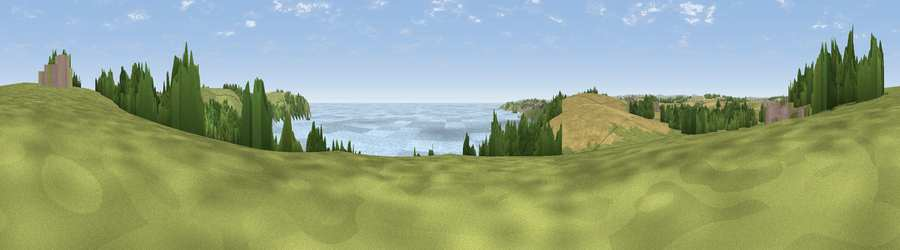

Viewpoint near Trewithian
#11116 in England · top 24% of its area beats it · near TrewithianThe view, rendered

A 360° render of this exact spot computed from the terrain model, tree cover and land cover — summer colours, afternoon light, calibrated against photographs of famous viewpoints. Real trees, hedges and buildings will differ in detail.
The panorama
Grey silhouette: terrain skyline in each direction (720 bearings, Earth curvature and refraction included). Dashed green: skyline with trees (+15 m) and buildings (+8 m) as obstacles. Blue strip: how far the ground is visible on each bearing.
Where the view opens
Wedge length = distance to the farthest visible ground on that bearing (vegetation-aware). Rings at 10, 25 and 50 km.
What fills the view
51% water · 20% grassland · 18% woodland · 10% cropland
Angular shares of the visible panorama (visual magnitude), not map area. Landscape diversity 0.54 (0–1 Shannon).
Key numbers
More beautiful places nearby
The staircase of upgrades: each row has a higher view potential than everything closer. Driving times are estimates from straight-line distance, calibrated against real road routing — check an actual route before setting out.
| Place | Direction | Drive | Score |
|---|---|---|---|
| Viewpoint near Trewithian | N · 0 km | ~1 min | 61.8 |
| Curgurrell Hill | SW · 1 km | ~3 min | 71.5 |
| Viewpoint near Portloe | ENE · 7 km | ~15 min | 74.4 |
| Viewpoint near Gorran Haven | ENE · 12 km | ~23 min | 77.0 |
| Viewpoint near Trethosa | N · 17 km | ~29 min | 78.5 |
| Viewpoint near Foxhole | NNE · 17 km | ~30 min | 84.3 |
| Viewpoint near Foxhole | NNE · 18 km | ~31 min | 86.4 |
| Viewpoint near Stenalees | NNE · 22 km | ~36 min | 88.0 |
50.20742, -4.95105 · source: screening · position refined by local search. Computed location — check access rights before visiting.